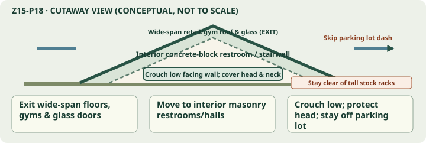

Z15-P18 · Disaster scenarios · New manuscript
Protect yourself during Tornado Warnings in stores, schools, or workplaces
Identify safe interior shelter pockets quickly inside unfamiliar public buildings and avoid deadly wide-span roof collapse.
When it applies · Grocery stores, big-box retail shops, warehouses, offices, gyms, churches, and schools during severe weather.
Equipment · Situational awareness of posted Severe Weather Shelter signs and interior restrooms/hallways.

Actions
- Move immediately AWAY from wide-span unsupported roofs (big-box retail floors, auditoriums, cafeterias, gymnasiums, and atrium lobbies) and tall glass storefronts—wide-span roofs are the first structural elements to lift and collapse in violent winds.[D03]
- Follow staff promptly to designated Severe Weather Shelter areas, basement levels, or sturdy interior small-span rooms (interior concrete-block restrooms, windowless interior stairwells, or central reinforced hallways away from heavy overhead stock racks).[D03]
- Crouch low facing interior walls, cover head and neck firmly with arms, coats, or sturdy bags, and stay clear of exterior doors until staff/officials confirm the Warning has passed.[D03]
Failure recognition · Running out to a retail parking lot to drive home mid-Warning, or sheltering right beside towering glass store doors and stacked warehouse pallets.[D03]
Verify · Confirm public-building shelter avoids wide-span roofs, glass doors, and heavy high shelving, prioritizing small interior masonry rooms.[D03]
Stop or change course · Never step outside into active wind/hail to move a parked car during a Tornado Warning.[D03]
Evidence and editorial notes
- D03 · FEMA / Ready.gov · Tornadoes (current web edition)
- Section: Tornadoes > Watch vs Warning, Safe Room Selection, and Post-Storm Hazards · Conditions: Developing supercells, Tornado Watches, and Tornado Warnings
Support: Act immediately on a Tornado Warning by moving to a FEMA safe room, storm shelter, basement, or lowest-level small interior room away from windows; protect head/neck from flying debris, never shelter in vehicles/mobile homes or under overpasses, and watch for downed power lines and gas leaks afterward.
Limitations: Outdoor sirens are designed to alert people outdoors and may be inaudible inside insulated homes during storms. · Conflicting evidence: None; aligns with E17 and NWS-TORNADO.
Editorial note: Core tornado shelter-selection and post-storm hazard evidence in Z15. · Specialist reviewer: Meteorology and emergency management
Primary source · checked 2026-11-24
Source lineage · FEMA Ready.gov Tornadoes; new manuscript · Classification · New manuscript.